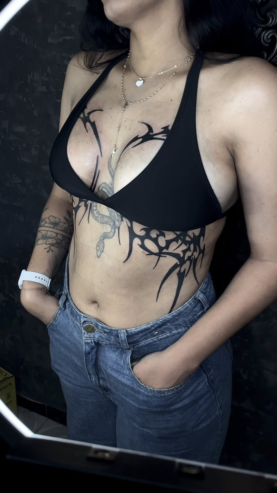
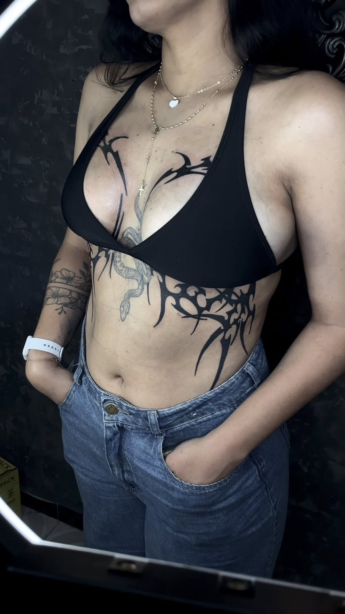

Tatuagem é arte. E seu corpo, a tela.
Transforme sua pele em uma obra-prima com David Morais.
Explore nosso portfólio e agende sua sessão hoje mesmo!
Quem sou eu?

Desde 2020, venho transformando ideias em arte na pele. Meu trabalho é focado em tatuagens que carregam significado, estilo e personalidade — seja no traço fino, no Blackwork ou em tattoos inspiradas em animes. Aqui, cada cliente é único e cada tatuagem é feita com atenção aos detalhes, respeito à sua história e técnica apurada. Mais que um estúdio, esse é um espaço onde a arte encontra identidade.
Portfólio
 


Agende sua Tatuagem
Ficou com alguma dúvida ou quer marcar sua sessão? Fale comigo pelos canais abaixo!